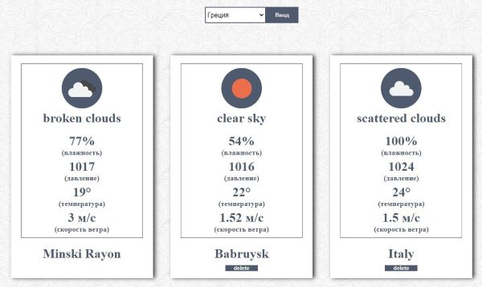
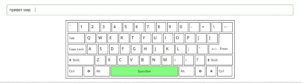

Curriculum Vitae
Ilya Safyan

Contact
Address: Belarus, Minsk
Email: js.learn.safyan@gmail.com
Telegram: @ibot_minsk
Instagram: id77585068
GitHub: @roadToTheFuture
Resume
While studying at the university, I took part in the competition for the best layout of the site. This topic interested me and, since the university program seemed to me insufficient, I decided to deepen my knowledge on this issue. As a result, my project took first place. I was so carried away by the process of website development that I decided to continue self-study. Now I realized that i can not only work, but do what i love. Every day I improve my knowledge in the field of frontend development. My goal is to become a full Full stack developer and develop the coolest projects that make our world better.
Hard-skills
Code Example
I've written can be seen at my github account: @roadToTheFuture
Experience
Keyboard (native js) @roadToTheFuture

Take Weather from API (native js) @roadToTheFuture

Education
-
Graduated from Belarusian National Technical University marketing, management and entrepreneurship faculty
-
Graduated from BNTU Military Department organization of financial activity of troops. I am a reserve lieutenant.
-
Ended course Лущенко Александра "JavaScriptV2.0"
-
Ended course html academy worked in a simulator with a paid subscription
-
I improve my English with the help YandexPraktikum
-
YouTube training: Лущенко Александр Фрилансер по жизни
English skills
My English is at a2-b1 level as I can communicate with native speakers on social media. During my five years at university, I practiced English. At the moment, I continue to develop my level with the help of Yandex courses.